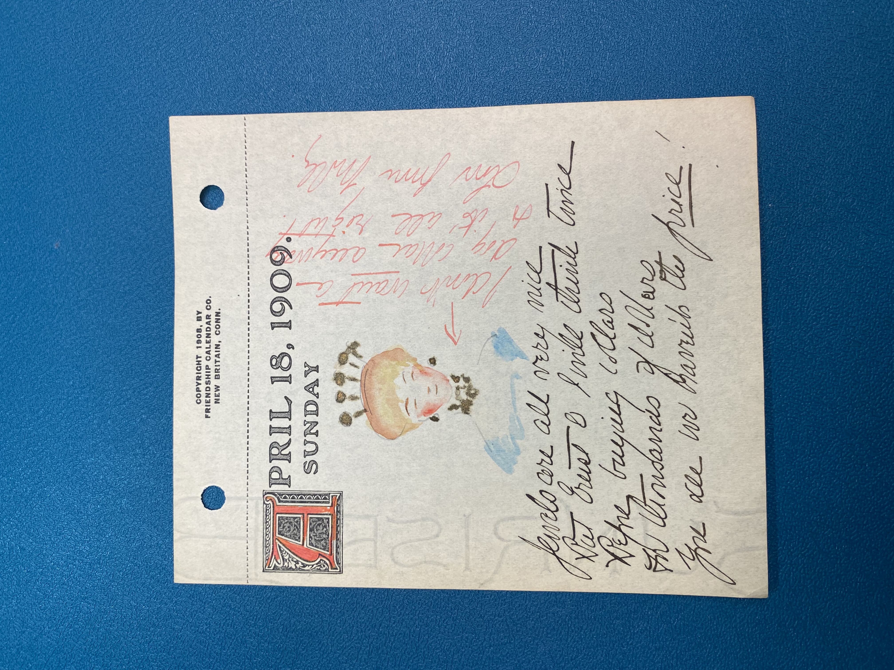

Drawing of a woman that is blushing because of the
jewelry that is around her neck.—#zmurphy
April 18, 1909. Sunday
Jewels are all very nice But Ernst & I will think twice
Before buying collars For thousands of dollars You see we ???????
the price!
I don’t want a dog collar anyway so it’s all right! Love
from Molly.
This is showing that Mary is very conservative of her money and
does not want to spend thousands of dollars on jewelry when they could because
they were very financially stable.—#zmurphy